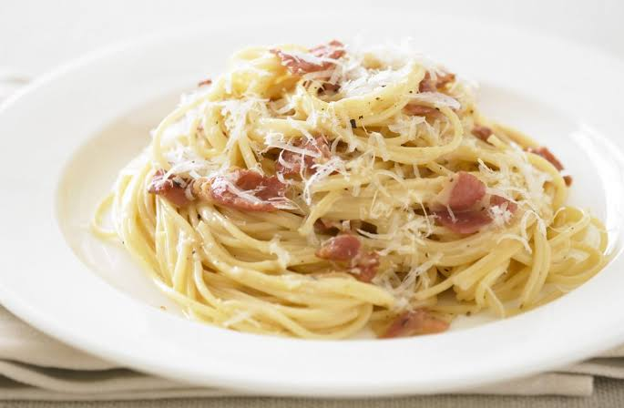

home
Carbonara

Description
Carbonara is a Roman pasta dish made with spaghetti, guanciale (cured pork cheek), eggs, Pecorino Romano, and black pepper.
The eggs and cheese are mixed off the heat to create a creamy sauce with no cream involved,savory, and peppery flavor.
Ingredients
- spaghetti
- Guanciale
- eggs
- pecorino romano
- black pepper
- salt
Steps
- Boil pasta in salted water until al dente
- While pasta cooks, fry guanciale in a pan until crispy
- Whisk eggs, grated pecorino, and black pepper in a bowl
- Drain pasta, save some pasta water
- Add hot pasta to the pan with guanciale, off the heat
- Pour in egg mixture, toss quickly, adding pasta water to make it creamy
- serve immediately with extra cheese and pepper